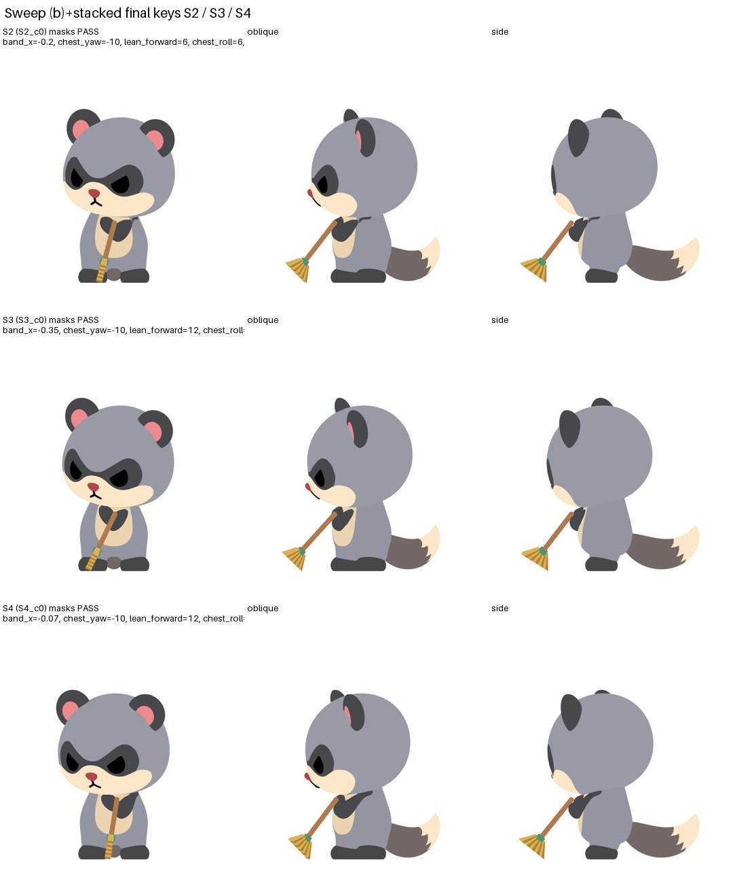
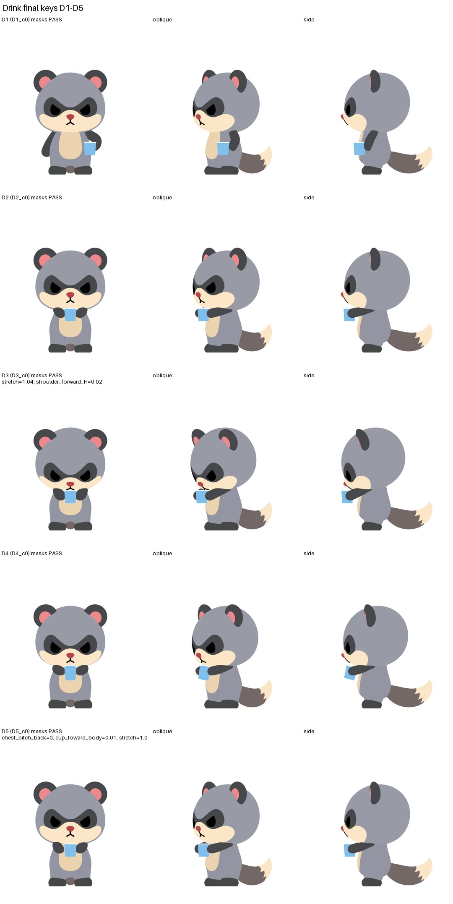
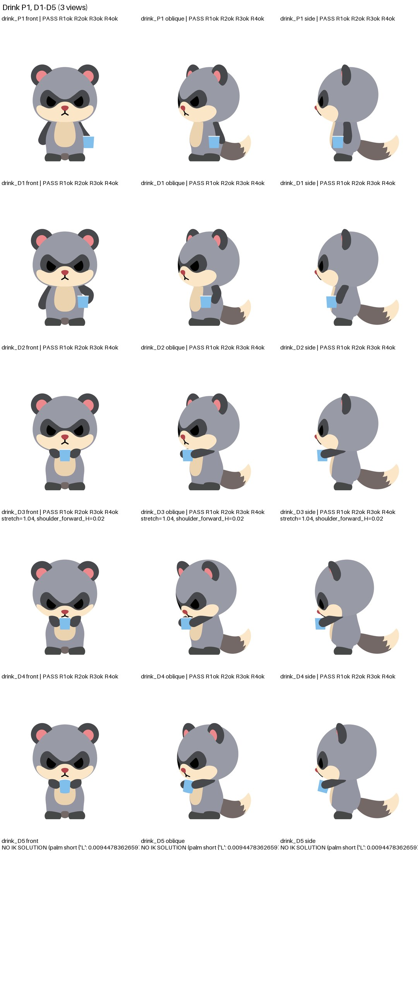
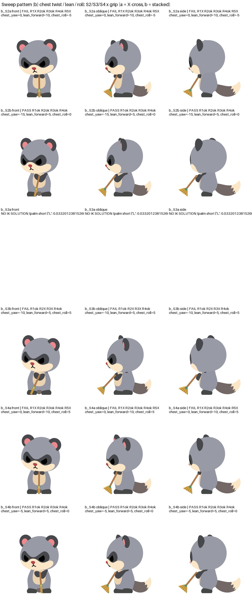
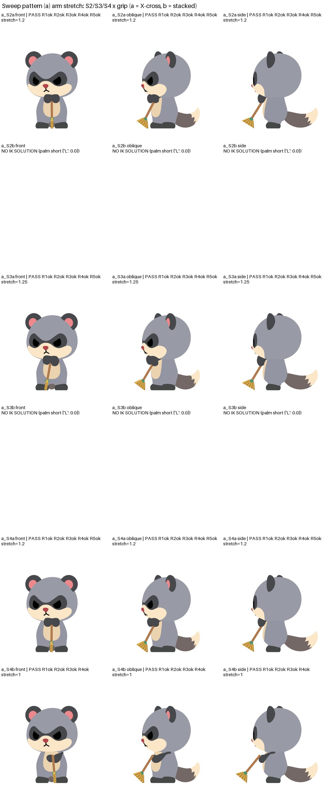
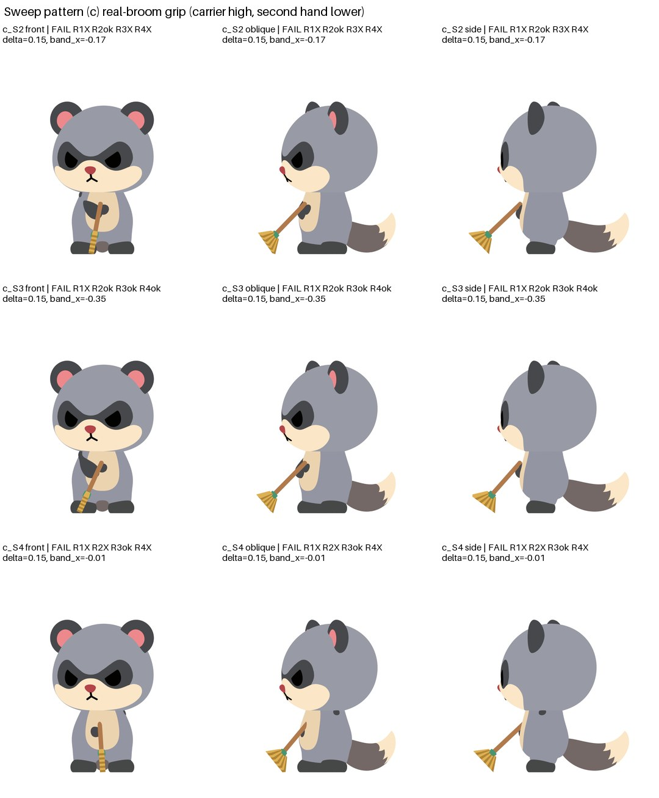
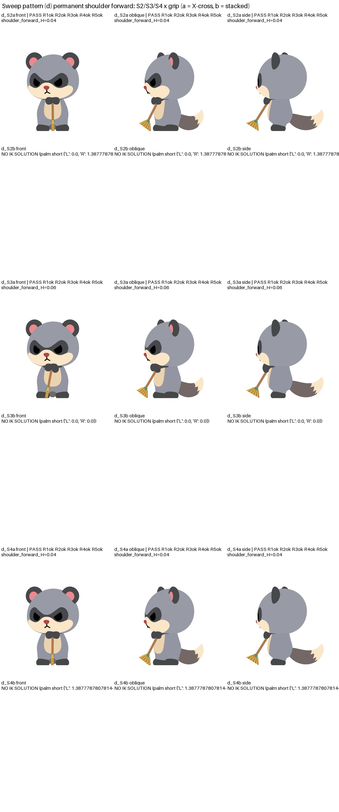
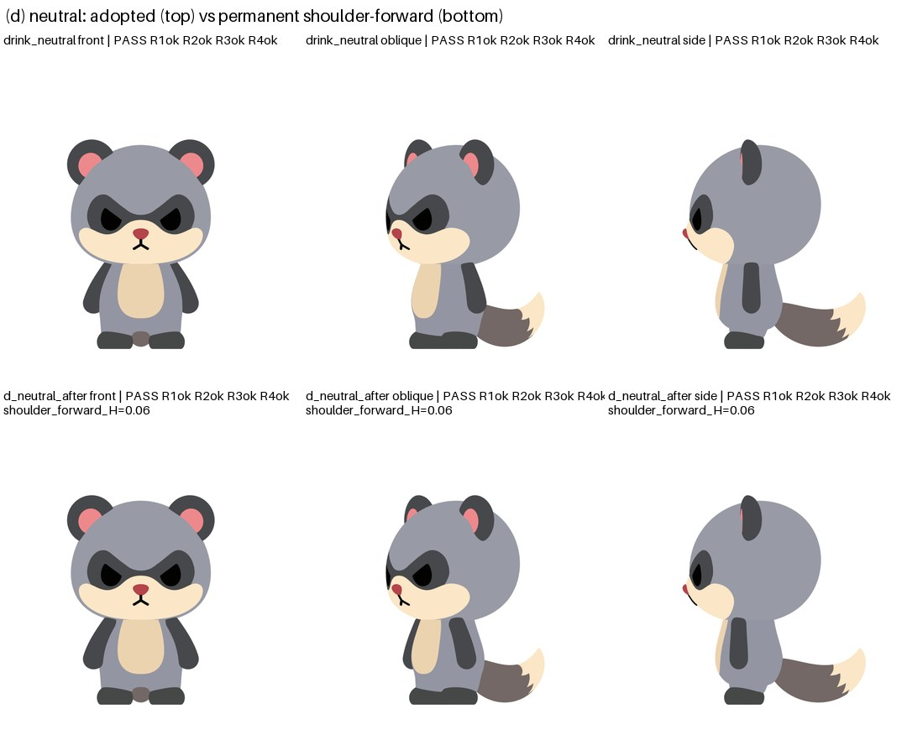
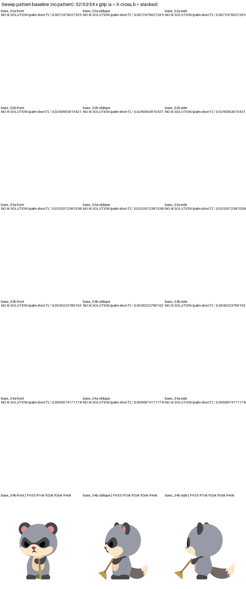

ご指示どおり、腕の付け根が体の内側で重なるのは許容し（見える破綻だけ不合格）、掃除の腕の形 (a)〜(d) をすべて骨リグ（B）で作りました。静止ポーズの試作です（まだ動画ではありません）。各画像の上の文字が機械判定（PASS/FAIL）、下の表が私の目視判定です。目視で崩れて見えるものは、機械判定が PASS でも不採用としています。
肩の付け根の補正（腕を振るほど付け根を内側に引き込む。静止時の見た目は不変）を入れた骨リグ上で、動作全体を 60fps で通して作りました。手が物に触れている間は肘の向きが連続するように解き、離れている間はアニメーターのように弧を描いて動かしています。全フレームを 3 視点で検査済みです。
| 胴体の形 | 前回ご指摘の「胴体が歪む」は解消（胴体は剛体として回るだけで、輪郭は崩れません）。 |
|---|---|
| 飲む | 体の横で持つ→持ち上げ→両手持ち（左右対称）→頭を下げて飲む→下ろす→戻す、が通しで動きます。手の接触・小物の干渉・関節の急な動き・肘の反転はすべて合格。奥の腕がコップの陰に隠れて見える瞬間がありますが、通常の遮蔽です。 |
| 掃く | 上体を少しひねり上下に握った形で、中央・左・右のストロークが通しで動きます（全フレーム合格）。 |
| 残っている点 | 掃く：箒を手に取る／置く場面が未作成、左右の掃き幅が小さめ（元動画の約 8 割）。飲む：口元で頭を下げる形（元動画は少し上を向く。腕が短いため下げる形で届かせています）。どちらも間合いはまだ初回の調整です。 |
訂正：掃除の中央ポーズ（S2）を「合格」と表示していましたが、斜め視点で首と肩の境目に約 5 px の小さな黒い欠片（腕の付け根の飛び出し）がありました。判定が 12 px 未満の破片を無視していたため見逃していました。
方針：キーポーズの組み替えで遷移を直す作業は打ち切りました（直すと別の遷移が崩れる状態が続いたため）。原因は (1) 肩の付け根（接合部）の形と、(2) ポーズ間の腕の動かし方の表現にあり、次は肩の接合部を立ち動作の可動域全体で直し（欠片の許容 0）、その後に動作全体を連続した動きとして作り直します。届くかどうか（到達性）は全キーで確認済みです。
常設のご許可にもとづき、掃除は (b) 上体を少しひねる＋上下握り で進めました。キーポーズで少し止まってから次へ移る「ポーズ間プレビュー」です（間合いの最終調整はまだ）。赤字の区間は不合格（途中で肘の向きが飛ぶなど）で、次に直します。
| 飲む | D1〜D5 すべて成立。両手持ち→口元→戻すは左右対称で滑らか。もう一方の手がコップへ寄る区間（D1→D2）だけ肘の向きが飛ぶ → 寄せ方を外側からに直す。 |
|---|---|
| 掃く | 左端は上体を左へ 10° ひねり前へ 12° 傾けて成立。掃き幅 0.28（元動画 0.34）。中央↔右端は成立、中央↔左端は途中の姿勢がつながらない → 中間のキーポーズを挟んで直す。前傾が強く頭がうなだれ気味に見えるのも調整対象。 |


| パターン | 見た目 |
|---|---|
| 飲む | 持つ→集める→胸で両手持ち（左右対称）→頭を下げて口元→離す、まで自然に読めます。口元は腕を 4% 伸ばし肩を少し前へ。片手に戻る途中の 1 ポーズだけ未解決（手がわずかに届かない）。 |
| (a) 掃く間だけ腕を伸ばす | X 字交差は、両手があご下で一つの黒い塊（蝶ネクタイ状）になり交差に見えません → 不採用。上下握りは右端だけ成立。 |
| (b) 上体をひねる・前傾 | 今回いちばん自然。上下握りで中央と右端が成立し、前腕がお腹を斜めに横切り、体と顔が少し箒の方を向きます。左端は頭の下で上腕が突き出て未解決。X 字交差は不成立。 |
| (c) 片手を胸・片手を低く（実際の掃き方） | 上の手の前腕が胸に隠れ、箒が体に当たる → 不成立。 |
| (d) 肩の付け根を前へ | X 字交差は (a) と同じく黒い塊になり不採用。上下握りは不成立。静止時の見た目は、横から見ると腕が少し前へ移ります（下の比較）。 |
現時点の結論：元動画のように「両前腕が胸の前で X 字に重なる」形は、このキャラの短い腕と、体の奥にある肩の位置では、どのパターンでも作れていません。いちばん近いのは (b) 上体を少しひねる＋上下握り で、前腕がお腹の前を横切ります。左右へ大きく掃く位置（左端）は未解決で、箒の横移動もまだ小さいです。





静止時の見た目の変化（上：採用中、下：肩を前へ 0.06H）

